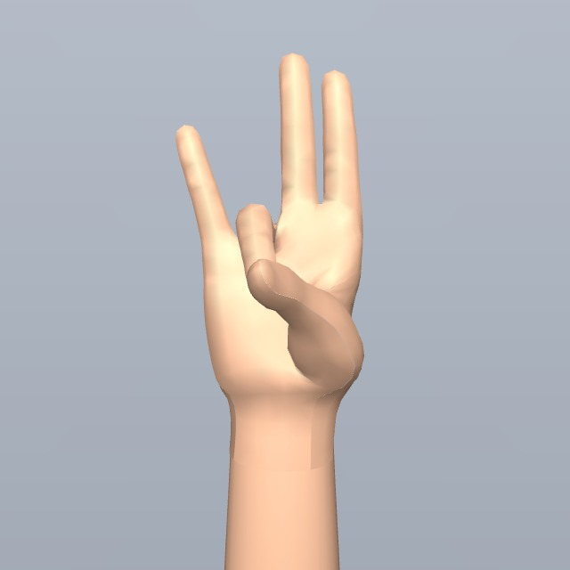

Twenty-eight hand gestures.
Each defined in a single sentence of the Abhinaya Darpana, the classical treatise on Indian dance.
HastaBench
Can frontier AI models form them, with a real 3-D hand?
How it works
The model sees the target and moves the hand, one tool call at a time.

Target · Mayura, peacock
Results · 10 frontier models
Mean HastaScore over the 28 hastas
13 / 28
solved by the best model
Where they fail
Close is not correct.
81%
of failed episodes miss with the thumb by more than 2 cm
Two hands
Coordination is harder still.
0 / 50
two-hand episodes solved
HastaBench
A benchmark for embodied hand control, from classical Indian dance.
samarth777.github.io/hastabench
github.com/samarth777/hastabench
HastaBench